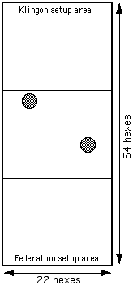
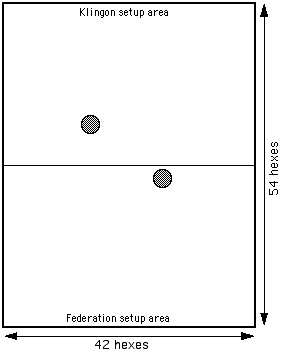

The battle area map used in the various campaigns and scenarios described in this site is not the standard STCS game board. Rather, knowing some big battles were planned, a larger map was constructed. It is this larger map which is assumed in all of the scenario setup instructions.
The original map was composed of three small Chessex Battlemats™ connected side-by-side. The final map was made of two Chessex Megamats™ (#97869, Black Vinyl, 30mm Numbered Hexes) connected along one of the long sides. The two maps provide an area of approximately 48" by 68" (or, more importantly, 42 hexes by 54 hexes).
|

Rough size of the original battle area map. This is shown in most scenarios, although the size and scale of the figure may vary. |

Size of the final battle area map. |